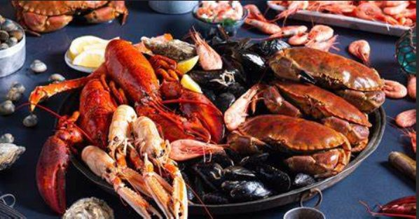
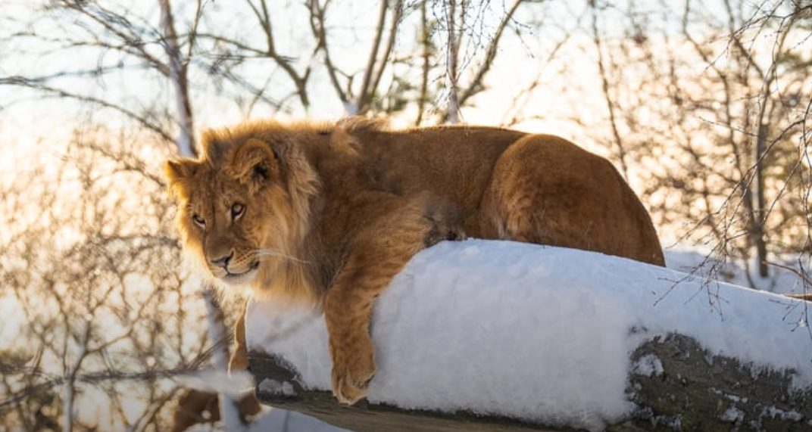
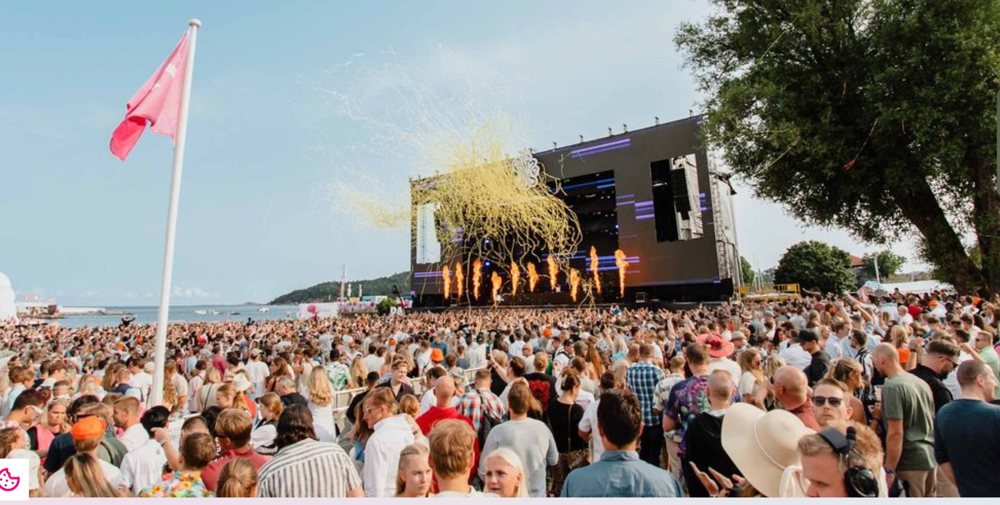
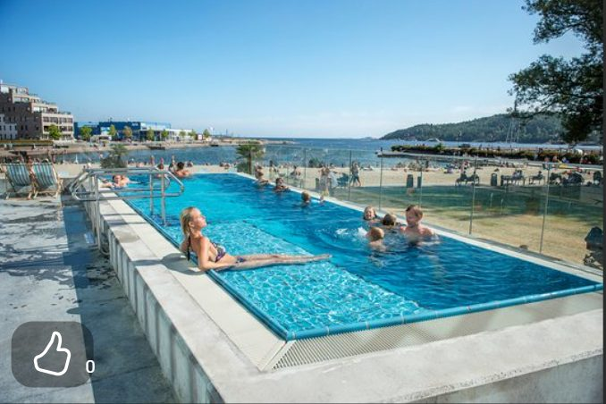

Die Region Kristiansand hat viel zu bieten – Restaurants, Erlebnisse, Festivals und Fitness für die ganze Familie.

In Südnorwegen und Kristiansand gibt es viele aufregende Restaurants für jeden Geschmack und jedes Budget. Nachfolgend sind einige der Restaurants aufgeführt, die empfohlen werden können. Sie befinden sich alle im Zentrum von Kristiansand, eine kurze Autofahrt vom Ferienhaus entfernt.
Wir empfehlen auch unser gemütliches lokales Café Geitodden auf Flekkerøya zu besuchen. Es liegt nur wenige Gehminuten (800 Meter) vom Ferienhaus entfernt.
Darüber hinaus gibt es in Südnorwegen auch ein 1-Stern-Michelin-Restaurant, das sich unter Wasser befindet, daher der Name Under. Für Tischreservierungen im Under ist es wahrscheinlich, dass diese mehrere Monate im Voraus gebucht werden müssen.
Das Restaurantangebot kann sich ändern.
Internationale Brasserie-Küche mit Fokus auf lokalen Zutaten von höchster Qualität, aber auch Leckereien aus der ganzen Welt, hauptsächlich von der französischen Küche inspiriert. Wine Spectator 2024 und Restaurant Guru 2024.
Website besuchen →Bei Smag & Behag Kristiansand sind es die besten saisonalen Zutaten aus dem In- und Ausland, die die Speisekarte bestimmen, mit großem Wert auf lokale Zutaten.
Website besuchen →Das Restaurant Sjøhuset serviert Fisch und Schalentiere von höchster Qualität und darüber hinaus lebenden Hummer. Aber auch Fleischliebhaber kommen auf ihre Kosten. Mit ihrer maritimen Umgebung und der einzigartigen Lage direkt am Meer ist alles für eine unvergessliche Mahlzeit vorhanden.
Website besuchen →Ein informelles, französisch inspiriertes Bistro in der Mitte des Marktplatzes von Kristiansand. Die Küche ist so lokal wie möglich, von Grund auf, mit köstlichen Aromen im Fokus.
Website besuchen →Inspiriert von der südostasiatischen Küche, kombiniert mit guten, lokalen Zutaten, möchte Monsoon ein kleines Stück asiatische Fusion nach Kristiansand bringen. Für Vegetarier geeignet.
Website besuchen →Mother India bietet ein Geschmackserlebnis, bei dem die Sinne in einer wunderbaren Kombination aus Authentizität, köstlichen Zutaten und verlockenden Gewürzen verschmelzen und Sie der Gaumen auf eine spektakuläre Reise in weit entfernte Regionen mitnimmt. Für Vegetarier geeignet.
Website besuchen →Tradition und Qualität stehen bei Slakter Sørensen im Mittelpunkt. Die Essensphilosophie sind klassische Gerichte, die mit Sorgfalt und den besten Zutaten zubereitet werden. Auf der Speisekarte findet sich alles von leckeren Sharing-Gerichten bis hin zu saftigen Steaks. Für Vegetarier geeignet.
Website besuchen →Sie nennen es Urban Farming, bei dem Stadt auf Land trifft. Aromen, Inspirationen und Rohstoffe aus dem bäuerlichen Leben werden in einem urbanen Umfeld gemischt, modernisiert und veredelt.
Website besuchen →Ein Café, das das ganze Jahr über geöffnet ist, mit italienischer Pizza mit echtem Sauerteigboden, heißen „Toasten Island", frischen Backwaren, Barista-Kaffee und Eis. Tolle Kunst an den Wänden, die an sich schon einen Besuch wert ist. Empfohlen!
Website besuchen →Ein Periskop, das in die Speisekammer der Natur blickt: In der Herangehensweise an Essen und Architektur dient der Ort als lebendiger Raum, offen für die kleinen, bezaubernden Bereiche des Ozeans und die reiche Vielfalt darin.
Website besuchen →
In Kristiansand und Umgebung gibt es viele Möglichkeiten für Erlebnisse, Kunst und Kultur. Sie können den Zoo, das Aktivitätscenter mit Schwimmhalle „Aquarama", das Kunstsilo, das Kletterzentrum in Kristiansand oder das Kanonenmuseum in Møvik besuchen. Oder wie wäre es mit einem Ausflug zum charmanten Pier Fiskebrygga in Kristiansand mit seiner guten Auswahl an Fischen und Schalentieren?
Auf Flekkerøya gibt es eine tolle Umgebung mit kleinen, idyllischen Buchten, Stränden/Badestellen und Wanderwegen zur allgemeinen Nutzung. Flekkerøya ist bekannt für seine einzigartige Artenvielfalt mit üppiger Vegetation und einzigartigen Arten.
Darüber hinaus war Flekkerøya im Laufe der Geschichte ein militärstrategischer Ort, und es gibt viele Kriegsdenkmäler, insbesondere aus dem 2. Weltkrieg, die auf der Insel (und nicht weit vom Haus entfernt) leicht zugänglich sind.
Siehe auch de.visitsorlandet.com für weitere und aktualisierte Aktivitätsangebote.
Norwegens größter Abenteuerpark mit Zoo mit Tieren aus aller Welt – von großen Raubtieren über bunte Vögel bis hin zu Haustieren und kleinen Reptilien. Im Inneren des Zoos gibt es einen riesigen Wasserpark, für den es separate Tickets gibt. Darüber hinaus gibt es viele Aktivitäten, Unterhaltung und Shows.
Website besuchen →Das Kilden Theatre and Concert Hall für Südnorwegen ist ein Theater- und Konzertsaal auf der Odderøya in Kristiansand. Das Angebot umfasst alle Musikrichtungen von Klassik, Oper bis hin zu Pop und Rock.
Website besuchen →Odderøya ist eine Insel im Kristiansandsfjord, die durch Brücken südlich des Stadtzentrums mit dem Festland verbunden ist, und dabei, sich als regionales Kulturzentrum zu etablieren – mit Künstlern, Galerien und Filmemachern in den alten Kasernen. Auf Odderøya gibt es viele interessante Spuren militärischer Aktivitäten, vom Großen Nordischen Krieg bis einschließlich des Kalten Krieges. Wichtige Spuren der Kämpfe am 9. April 1940 sind sichtbar und teilweise mit Hinweisschildern gekennzeichnet.
Website besuchen →In großartigem Wandergelände bei Møvik außerhalb von Kristiansand liegt eine Kanonenbatterie aus dem Zweiten Weltkrieg. Die Kanone von Møvik ist die zweitgrößte an Land montierte Kanone der Welt. Die Batterie wurde 1941 in Betrieb genommen und sollte zusammen mit der Geschützbatterie im dänischen Hanstholm den Schiffsverkehr im Skagerrak regeln. Die Geschütze hatten eine Reichweite von 55 Kilometern.
Website besuchen →Bragdøya ist ein kommunales Erholungsgebiet im Herzen des Byfjords in Kristiansand – eine typische südliche Schäreninsel, leicht hügelig mit Klippen und Felsen, geschützten Senken und Landstücken, die Platz für eine vielfältige Pflanzen- und Tierwelt bieten. Sie finden feine Sandstrände und geschützte Felsen, die sich perfekt zum Sonnenbaden und Schwimmen eignen. Auf Bragdøya können Sie das ganze Jahr über auf wilde Schafe treffen.
Website besuchen →Die Markens-Straße ist eine Straße in Kristiansand, die sich im Stadtteil Kvadraturen befindet. Vor Ort wird die Straße „Markensgate/-gata" genannt, oder mit der gebräuchlicheren Kurzbezeichnung „Markens". Es ist die unangefochtene Hauptstraße der Stadt und die belebteste der Stadt.
Website besuchen →Aquarama Bad ist Südnorwegens größter Indoor-Wasserpark mit Spa-Bereich. Das Bad verfügt über Pools und Attraktionen für die ganze Familie, mit einer Tauchanlage, die jedem die Möglichkeit gibt, sowohl Spiel als auch Sport und Wettkampf auszuleben. Das Sportbecken hat die olympischen Abmessungen von 50 x 25 Metern.
Website besuchen →Kristiansands schönste Freiluftbühne und Restaurant, im stadteigenen Gartenjuwel Ravnedalen, gegründet von Oscar Wergeland. Seit 18 Jahren für seine köstlichen Hamburger bekannt. Während des Sommers werden Konzerte mit Künstlern aus dem In- und Ausland organisiert, dazu Quiz, Bingo und eine Sommerbibliothek.
Website besuchen →Schlendern Sie durch den ältesten Stadtteil der Stadt, Posebyen. Nach dem Stadtbrand von 1892 sind diese Holzhäuser die einzigen, die noch erhalten geblieben sind. Hier finden Sie auch das versteckte Juwel Posebyhaven, einen Hinterhof mit Cafés, Nischengeschäften, einer Bäckerei und Konzerten im Sommer.
Website besuchen →In Südnorwegens größtem Kletterzentrum können Sie an Selbstsicherungen und Seilen klettern und bouldern. Sie benötigen keine Vorkenntnisse und erhalten alle notwendigen Schulungen im Zentrum.
Website besuchen →Escape Room ist ein interaktives Spiel, bei dem Sie 60 Minuten lang in einem Raum eingesperrt sind. Ihre Aufgabe ist es, alle Hinweise und Schlüssel zu finden und die Rätsel zu lösen, um sich innerhalb von 60 Minuten zu befreien.
Website besuchen →Fiskebrygga ist ein Stadtgebiet in Kristiansand. Hier auf dem Fischmarkt werden Fisch und Meeresfrüchte verkauft. Es gibt auch viele Restaurants in Fiskebrygga.
Website besuchen →Flekkerøy ist ein Stadtteil und die größte Insel in Kristiansand, mit dem Dorf Skålevik und 3.274 Einwohnern. Es ist eine alte Siedlung, später eine Zollstation, und war vor der Gründung von Kristiansand im Jahr 1641 ein wichtiger Handelsposten. Bereits 1555 wurde die Insel befestigt.
Website besuchen →
In Kristiansand finden das ganze Jahr über viele Festivals und Konzerte statt, vor allem im Sommer. Hier gibt es unter anderem jährliche Veranstaltungen wie Sommerbris, Måkeskrik, Palmesus, Ravnedalen Live – oder Sie können das Kulturzentrum in Kristiansand besuchen, mit all seinen Aktivitäten.
Das Angebot kann sich ändern.
Palmesus ist ein Musikfestival, das jeden Sommer in Bystranda im Zentrum von Kristiansand stattfindet. Palmesus gilt als Skandinaviens größte Beachparty mit über 20.000 Gästen und Top-Künstlern aus aller Welt. Palmesus konzentriert sich auf junge Menschen.
Website besuchen →Sommerbris ist Südnorwegens größtes Musikfestival mit hauptsächlich nationalen Top-Künstlern. Sommerbris ist für Erwachsene über 20 Jahre und findet jeden Sommer statt.
Website besuchen →Ravnedalen Live ist ein dreitägiges Festival in Norwegens schönstem Naturpark. Es handelt sich um ein Festival mit Top-Künstlern aus dem In- und Ausland, das jeden Sommer stattfindet. Ravnedalen Live ist für das erwachsene Publikum.
Website besuchen →Måkeskrik ist ein Festival mit Top-Künstlern aus dem In- und Ausland, das jeden Sommer stattfindet. Måkeskrik ist für das erwachsene Publikum.
Website besuchen →Die Dienstagabende in Fiskebrygga mit dem Bryggebandet sind dafür bekannt, dass sich den ganzen Sommer über jeden Dienstag Tausende von festlichen Menschen in der Fiskebrygga in Kristiansand versammeln. Kombinieren Sie dies mit einem Abendessen in Fiskebrygga mit Konzert.
Website besuchen →Kaptein Sabeltann ist eine fiktive Welt mit einem Piratenthema, das Musik, Theateraufführungen, Filme, TV-Serien, Bücher, Videospiele und einen Vergnügungspark umfasst. Jeden Sommer gibt es eine fantastische Show, die gut für Kinder über 6–7 Jahre geeignet ist.
Website besuchen →
Auf Flekkerøya gibt es viele schöne Wandergebiete sowie eine separate Fitnesseinrichtung nur 2 Kilometer vom Ferienhaus entfernt. Darüber hinaus gibt es mehrere Fitnessstudios in der Umgebung.
CrossFit ist eine Form der Bewegung, die für jeden geeignet ist, unabhängig von der körperlichen Fitness. Das Crossfit-Training ist skalierbar, was bedeutet, dass jede Einheit auf Basis der eigenen Bedingungen an jedes einzelne Mitglied angepasst werden kann.
Website besuchen →Die SATS Group ist die führende Fitnesscenter-Kette in Skandinavien. Mit der Vision „Menschen gesünder und glücklicher machen" spielen sie eine wichtige Rolle für ihre Mitglieder und deren Gesundheit und Lebensqualität.
Website besuchen →Fitnesscenter Flekkerøy mit eigenem Krafttraining oder Gruppentraining.
Website besuchen →Die Trainingsanlage Flekkerøy besteht aus Fußballplätzen, Handballplätzen, Lauf- und Skibahn sowie Skateboarding.
Website besuchen →Auf der Suche nach den besten Wanderwegen in Flekkerøy? Egal, ob Sie sich auf eine Wanderung, eine Radtour, eine Laufstrecke oder andere Outdoor-Aktivitäten vorbereiten – AllTrails verfügt über 11 malerische Routen in und um Flekkerøy, mit ausgewählten Karten, Bewertungen und Fotos.
Website besuchen →Aquarama ist eine komplette Anlage mit einem Wasserpark, einem Sportbecken, einer Tauchanlage, einem Spa, einem Fitnesscenter (SATS Aquarama), einer Sporthalle und verschiedenen öffentlichen Gesundheitsdiensten.
Website besuchen →Weitere Informationen finden Sie auf den folgenden Seiten: